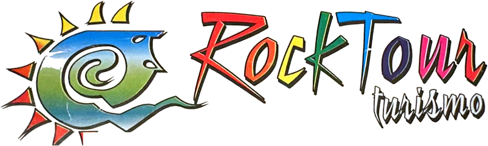

A ROTA HISTÓRICA
Palmyra • Kirtland • Nauvoo • Carthage • Adam-ondi-Ahman • Liberty • Salt Lake City
Conheça lugares fundamentais da história da Restauração antes de participar da Conferência Geral.
12 a 15 dias Saiba mais
A música começa quando você entrar no site.
Para os brasileiros que desejam participar da Conferência Geral em Salt Lake City, a Rock Tour oferece três maneiras diferentes de organizar essa experiência. Escolha a que combina com o seu tempo, o seu ritmo e o que você quer viver nos Estados Unidos.
Uma viagem especial para quem deseja conhecer alguns dos lugares mais importantes da história da Restauração antes de chegar a Salt Lake City. A viagem começa no leste dos Estados Unidos e atravessa importantes locais históricos até chegar a Utah.
Primeiro contato com alguns dos locais mais importantes da história da Restauração.
Visita aos locais históricos da primeira época da Igreja, com foco na história e no contexto dos primeiros membros.
Uma das cidades mais importantes da história da Igreja, com tempo para conhecer a cidade e sua história.
Visita à região histórica de Carthage e à Carthage Jail, local associado aos acontecimentos de junho de 1844 e à morte de Joseph e Hyrum Smith. Um momento de reflexão e aprendizado sobre um dos episódios mais importantes da história da Restauração.
Área de grande importância histórica e religiosa para os membros da Igreja. O visitante terá contato com a paisagem e com a história associada ao local.
Local histórico associado ao período em que Joseph Smith esteve preso no Missouri. Uma visita especialmente interessante para conhecer o contexto dos primeiros anos da Igreja.
A viagem histórica termina em Salt Lake City, onde o grupo conhece a cidade e se prepara para a Conferência Geral.
Participação na Conferência Geral em Salt Lake City.
Uma experiência espiritual seguida por uma grande aventura pelo Oeste americano. O visitante chega diretamente a Salt Lake City para a Conferência Geral e, depois, começa a viagem pelos grandes parques dos Estados Unidos.
Chegada, acomodação e passeios pela cidade.
Participação na Conferência Geral.
Primeiro destino da viagem pelos parques: montanhas, cânions, rios e trilhas.
Conhecimento dos famosos hoodoos, formações rochosas que criam uma das paisagens mais diferentes do Oeste americano.
Seguimos para Moab, para conhecer os famosos arcos naturais.
Uma paisagem monumental de cânions, rios, mesas e formações geológicas.
Um dos grandes símbolos naturais dos Estados Unidos, com tempo para conhecer os principais mirantes e apreciar o pôr do sol, dependendo do horário do grupo.
Dependendo da duração da viagem e da época do ano, o roteiro poderá continuar para um dos parques nacionais mais impressionantes do mundo.
O roteiro poderá ser ampliado para incluir outros destinos.
A opção mais confortável para quem quer participar da Conferência Geral sem fazer uma viagem longa, conhecendo Salt Lake City e algumas das principais atrações próximas.
Passeio pela cidade e tempo livre para compras e preparação para a Conferência.
Participação na Conferência Geral.
Participação nas atividades da Conferência e tempo livre para conhecer a cidade.
Passeio por uma das cidades montanhosas mais conhecidas de Utah.
Uma das experiências naturais mais interessantes próximas de Salt Lake City.
Dependendo da duração escolhida, o dia pode incluir:
Dia livre, com várias possibilidades.
Transfer para o aeroporto e retorno ao Brasil.
Cada viagem é montada sob medida, por isso não trabalhamos com preço fixo nesta página. O valor depende de vários fatores:
Depois do preenchimento do formulário, a Rock Tour envia uma proposta personalizada com o roteiro, a hospedagem e os valores da sua viagem.
Preencha os dados abaixo e a Rock Tour entra em contato com uma proposta feita para você.
Uma experiência especial da Rock Tour para brasileiros em Salt Lake City.